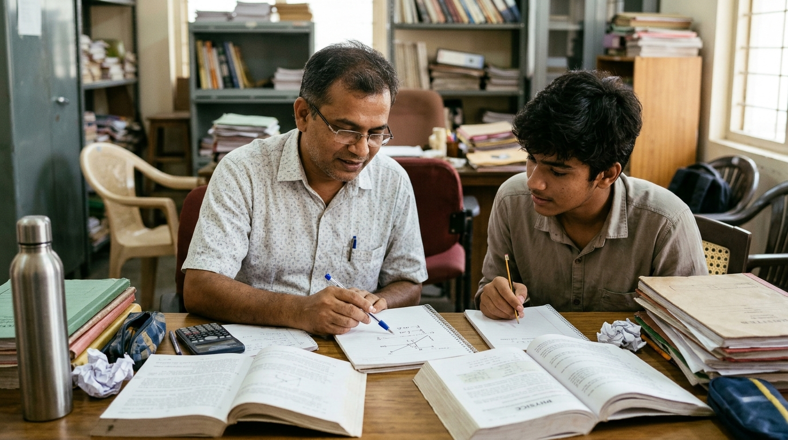
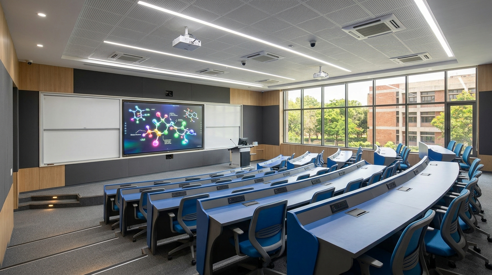
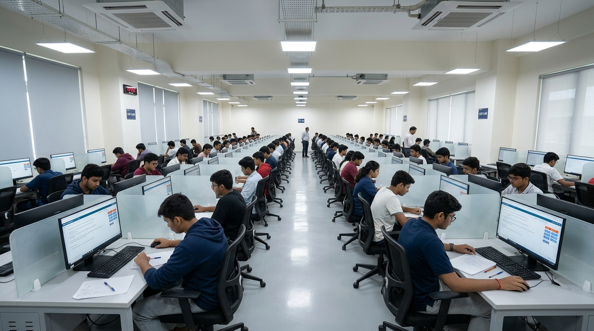

Intermediate Academic Framework
How our pedagogical timeline evolves from foundational building in First Year to peak exam conditioning in Second Year.
Intermediate First Year
The bedrock year focused on bridging the conceptual leap from Class 10 to high-school scientific rigour.
- Foundation Bridge: Initial 4-week orientation to upgrade algebra, trigonometry, vectors, and chemical balancing.
- Core Conceptual Depth: Completing ~50% of the entire competitive entrance syllabus (Mechanics, Stoichiometry, Cell Biology).
- Descriptive Writing Drills: Mastering intermediate board theory questions to secure 95%+ in 1st year public exams.
- Continuous Error Log: Instituting individual mistake-tracking habits right from term 1.
Intermediate Second Year
The capstone year focused on advanced topics, rapid revision of First Year modules, and high-frequency mock tests.
- Early Syllabus Completion: Second year syllabus concluded by late November to provide 4 months for mock drills.
- Interlinked Multi-Chapter Drills: Combining 1st year mechanics with 2nd year electrodynamics and calculus.
- Pre-Public Board Simulations: Multiple full-length board pre-final examinations to ensure flawless theory presentation.
- Grand CBT & OMR Mock Series: Real-time simulation of JEE Main Sessions and NEET-UG national examination formats.
Sample Daily Study Schedule
A disciplined, balanced routine combining classroom instruction, supervised self-study, doubt clearance, and physical relaxation.
Weekly Learning & Revision Strategy
Retention of scientific knowledge follows an exponential decay unless reinforced systematically. Our academic calendar is structured on a 6-day instructional cycle followed by a 1-day testing and review cycle.
- Monday to Friday: New concept lectures, theory notes completion, and daily practice problem (DPP) solving.
- Saturday: Comprehensive topic revision, doubt clinic consolidation, and lab practical sessions.
- Sunday: Standardized cumulative weekend mock examination followed by afternoon performance analysis and rest.

Academic Infrastructure
Specially appointed spaces engineered to support rigorous scientific study and examination conditioning.

Digital Smart Classrooms
High-resolution projection and interactive visualizers to display 3D molecular structures, ray optics diagrams, and biological animations.

Computer-Based Testing (CBT) Center
Air-conditioned network lab with individual terminal dividers replicating exact National Testing Agency (NTA) exam room conditions.